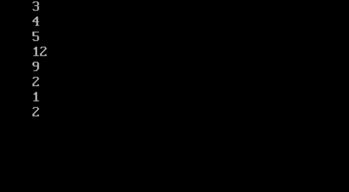
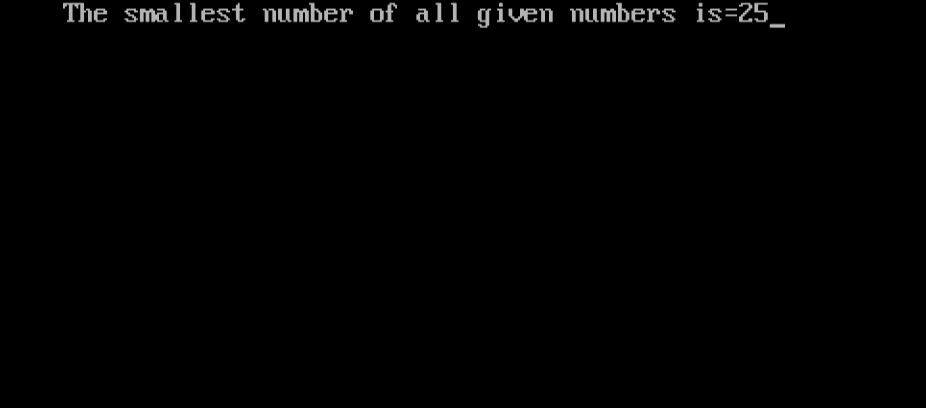
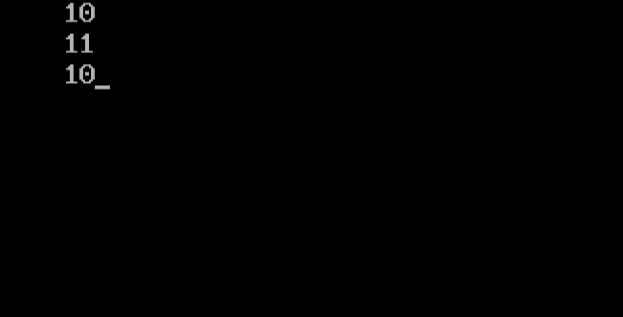

|
Operator is a symbol which is used between two variables.
| Addition | + |
|---|---|
| Subtraction | - |
| Multiplication | * |
| Quotient | / |
| Remainder | % |
| Input | Output |
|---|---|
#include<stdio.h>
main()
{
int a,b,c,d,e,f,g,h;
clrscr();
a=3;
b=4;
c=5;
d=a*b;
e=b+c;
f=c-a;
g=c/a;
h=c%a;
printf("%d\n%d\n%d\n%d\n%d\n%d\n%d\n%d",a,b,c,d,e,f,g,h);
}
|
 |
| Equals to | == |
|---|---|
| Not equals to | != |
| Greater than | < |
| Less than | > |
| Greater than equals to | <= |
| Less than equals to | >= |
| Input | Output |
|---|---|
#include<stdio.h>
main()
{
int a,b,c,d;
clrscr();
a=50;
b=32;
c=a-b;
d=20;
if(d>c)
{
printf("d is greater than a-b");
}
else
{
if(d==c)
printf("d is equals to a-b");
else
printf("d is less than a-b");
}
}
|
| And | && |
|---|---|
| Or | || |
| Not | ! |
| Input | Output |
|---|---|
#include<stdio.h>
main()
{
int a,b,c,d,e,f;
a=30;
b=25;
c=80;
d=32;
e=90;
f=95;
clrscr();
printf("The smallest number of all given numbers is=");
if(a |
 |
| Decrement (by one) | -- |
|---|---|
| Increment (by one) | ++ |
| Input | Output |
|---|---|
#include<stdio.h>
main()
{
int a;
clrscr();
a=10;
printf("%d",a);
a++;
printf("\n%d",a);
a--;
printf("\n%d",a);
}
|
 |